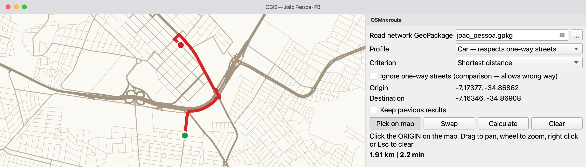
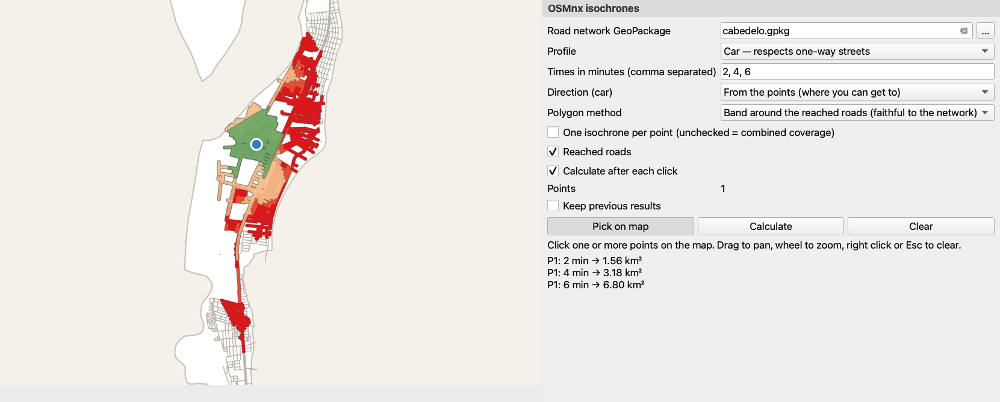

Download the road network of a place once, save it as a GeoPackage, then calculate routes that respect one-way streets and the areas reachable in a given time — on your computer, without a routing service or API key. Results are estimates based on the OpenStreetMap data of each place.
⬇ Install the plugin ★ Source on GitHub
Overview
Four Processing algorithms and two interactive map tools built on OSMnx (download and graph handling) and NetworkX (shortest paths).
Turns a place name into a GeoPackage with nodes, street segments, directed arcs and the boundary of the place.
Car routes follow the direction of travel recorded in OSM. A comparison mode shows where an undirected graph would drive the wrong way.
Areas estimated as reachable in 5, 10, 15… minutes from points or to points, with the arrival time on every reached street.
Side panels keep the map visible: click the points, pan and zoom freely; the calculation runs in the background.
| I want to… | Use | You get |
|---|---|---|
| work in a new place | 1. Download road network (OSM) | a GeoPackage with the network (needs internet) |
| check a GeoPackage before using it | 2. Inspect road network GeoPackage | an HTML report: CRS, fields, fill rate, routing diagnosis |
| try a route by clicking | Route on the map (toolbar) | route line, two points, distance and time in the panel |
| compute many routes or use a model | 3. Shortest path (Processing) | route layer and DISTANCE_KM / TIME_MIN outputs |
| see what is reachable from or to places | Isochrones on the map, or 4. Isochrones (Processing) for a point layer | isochrone polygons, reached roads and the points used |
The map tools and the Processing algorithms are two ways to do the same calculation: the panels are meant for exploring by clicking; the algorithms suit point layers, Run as Batch Process, the Graphical Modeler and Python scripts.
Installation
QGIS already ships geopandas, networkx, shapely and pyproj. OSMnx has to be added to the Python environment that QGIS uses, which is usually not the same as other Python installations on your computer.
--user installs into your home folder.Open Plugins → Python Console, paste the code below and press Enter. --no-deps keeps the libraries that came with QGIS untouched (see below).
from pip._internal.cli.main import main as pip
pip(["install", "--user", "--no-deps", "osmnx"])After restarting, run this in the Python Console. The first line shows which Python is running; the second must print the versions without errors.
import sys, osmnx, geopandas, networkx
print(sys.prefix) # should be inside the QGIS installation
print("osmnx", osmnx.__version__, "| geopandas", geopandas.__version__,
"| networkx", networkx.__version__)Plugins → Manage and Install Plugins, search for OSMnx Routing & Isochrones. While it is experimental, tick Show also experimental plugins in Settings. You can also use Install from ZIP with a file from the releases. Then check that OSMnx Routing & Isochrones appears in the Processing Toolbox.
--no-deps, and when to leave it out?--no-deps, pip may replace them with versions that QGIS's own modules (GDAL, scipy) were not built for, causing errors that are hard to trace. If the verification shows ModuleNotFoundError for another package, or a geopandas older than 1.0 (older Linux packages), install just that package the same way, e.g. pip(["install", "--user", "--no-deps", "requests"]), or run the command without --no-deps as a last resort.sys.prefix in the verification should point inside the QGIS installation (e.g. /Applications/QGIS.app/…, C:\Program Files\QGIS …, or /usr for Linux packages). If OSMnx is found in a terminal but not in QGIS, it went to another Python.--user does not work--user: remove it from the command. On recent Debian/Ubuntu, pip may stop with externally-managed-environment; adding "--break-system-packages" to the list is acceptable here because --user only writes to your home folder. With the OSGeo4W installer on Windows you can also use the OSGeo4W Shell: python -m pip install --no-deps osmnx.Quick start
A complete first run in Cabedelo, a small coastal town in Brazil: it downloads in under a minute on a normal connection.
Processing Toolbox (Ctrl+Alt+T) → OSMnx Routing & Isochrones → 1. Download road network (OSM). Type Cabedelo, Paraíba, Brazil, choose drive and save to a file (not a temporary output). Expected: four layers in the project — …_boundary, …_edges, …_nodes, …_arcs.
2. Inspect road network GeoPackage writes an HTML report. Expected: CRS EPSG:4326 and the arcs layer as the direction source.
Toolbar button Route on the map: click the origin, then the destination. Expected: a red line and the distance and estimated time in the panel.
Toolbar button Isochrones on the map: click a point. Expected: polygons for 5, 10 and 15 minutes, from green to red, and their areas in the panel.
Map tools
Both tools open a side panel that does not cover the map. A click picks a point, dragging pans, the wheel zooms, right click or Esc clears. The road network GeoPackage is taken from the layers already open in the project; you can also choose it in the panel.
 Route on the map
Route on the mapFirst click = origin, second click = destination; the route is then calculated in the background. Swap reverses it; a third click starts a new origin. The clicks are kept in the Route points layer.

 Isochrones on the map
Isochrones on the mapEvery click adds a point (P1, P2…) to the Isochrone points layer and the isochrones are recalculated — untick Calculate after each click to add several points first. The panel lists the area of every time band.

Screenshots: plugin 0.1, QGIS 3.44, interface in English.
Reference
They work in the dialog, in Run as Batch Process, in the Graphical Modeler and from Python. Every block follows the same order: when to use it, inputs, outputs, how to read the result and its limitations.
osmnx_routing:download_network
Use when you need a network for a place you have not downloaded yet.
| Parameter | Description |
|---|---|
| Place name | Municipality, district or neighbourhood with state and country, e.g. Campina Grande, Paraíba, Brazil. Nominatim looks it up and its boundary polygon limits the download. |
| Network type | drive public drivable roads · drive_service plus service roads · walk pedestrian network · bike cycling network · all_public every public way · all including private ones. Choose one that matches the profile you will use. |
| Output GeoPackage | File to write. A temporary output is deleted when QGIS closes; the log warns about it. |
edges (one line per street segment, for display), arcs (one line per direction of travel, used for routing), nodes and boundary (with the query, the OSM name and the download date). Segments carry speed_kph and travel_time.edges over a basemap to see whether the streets you need are there.~/osmnx/cache.osmnx_routing:inspect_network
Use when you received or edited a GeoPackage and want to check it before routing. Needs QGIS only, not OSMnx.
| Parameter | Description |
|---|---|
| Road network GeoPackage | Any GeoPackage; layers may carry a prefix (patos_nodes…). |
| Report | HTML file to write. |
maxspeed means most times come from default speeds. The direction source should be the arcs layer.3. Shortest path (one-way aware)osmnx_routing:shortest_path
Use when you need the path between two points, its length and its estimated time.
| Parameter | Description |
|---|---|
| Profile | Car — follows one-way streets · Pedestrian — ignores the direction. |
| Criterion | Shortest distance minimises length in metres. Fastest (car) minimises travel_time, an estimate from speeds; see How it works. |
| Origin, Destination | Points in any CRS. Each one is attached to the nearest node of the network, as explained below. |
| Ignore one-way streets | For comparison or diagnosis only: allows driving against traffic and flags those segments. |
| Walking speed | km/h, default 4.8. |
wrong_way, length, speed, time and cumulative values; Route points; the numbers DISTANCE_KM, TIME_MIN and WRONG_WAY_M.4. Isochrones (reachable areas)osmnx_routing:isochrones
Use when you want the area that can be reached within some minutes from points (or from which points can be reached).
| Parameter | Description |
|---|---|
| Point / Point layer | A clicked point, a layer (schools, clinics…) or both; the ID field names each point. |
| One isochrone per point | Ticked: one set of polygons per point. Unticked: one combined coverage of all points. |
| Direction (car) | From the points (where you can get to) or to them (where they can be reached from). |
| Times in minutes | e.g. 5, 10, 15 (also 5;10;15). |
| Polygon method | Band around the reached roads, or concave hull of the reached nodes. |
| Band width | Metres around the roads, default 40. |
drive network misses footpaths: download walk or all for walking studies.| Field | Meaning |
|---|---|
speed_kph | Speed of the segment in km/h (OSM maxspeed or a default). |
travel_time | Estimated time to travel the segment, in seconds. |
wrong_way | true when the route uses the segment against traffic (only with Ignore one-way streets). |
DISTANCE_KM · TIME_MIN · WRONG_WAY_M | Route length in km, estimated time in minutes and metres driven the wrong way. |
minutes · area_km2 · roads_km | Time threshold of the polygon, its area in km² and the length of reached roads in km (two-way streets counted once). |
t_start_min · t_end_min | Arrival time in minutes at the start and at the end of a reached road segment. |
Every algorithm has a stable id; enum parameters take the position of the option (0, 1, 2…).
import processing
# 1. download once (needs internet)
processing.run("osmnx_routing:download_network", {
"PLACE": "Cabedelo, Paraíba, Brazil", "TYPE": 2, # 2 = drive
"OUTPUT": "/data/cabedelo.gpkg"})
# 2. route by car, minimum estimated time (runs locally)
res = processing.run("osmnx_routing:shortest_path", {
"NETWORK": "/data/cabedelo.gpkg", "PROFILE": 0, "CRITERION": 1,
"ORIGIN": "-34.8410,-7.0323 [EPSG:4326]",
"DESTINATION": "-34.8417,-7.0371 [EPSG:4326]",
"OUTPUT": "TEMPORARY_OUTPUT"})
print(res["DISTANCE_KM"], res["TIME_MIN"])
# 3. walking isochrones of a point layer, one per point
processing.runAndLoadResults("osmnx_routing:isochrones", {
"NETWORK": "/data/cabedelo.gpkg", "PROFILE": 1, # 1 = pedestrian
"POINTS": "/data/schools.gpkg", "ID_FIELD": "name", "SEPARATE": True,
"MINUTES": "5, 10, 15", "OUTPUT": "TEMPORARY_OUTPUT", "ROADS": "TEMPORARY_OUTPUT"})How it works
Knowing these choices helps to judge whether a result is reasonable.
Each point is attached to the nearest node of the network, measured in a local metric CRS. For cars, only nodes of the largest strongly connected component are candidates — nodes from which every other node can be reached and back, respecting one-way streets — so a route always exists. For pedestrians, the largest connected component is used. A point on an isolated street therefore attaches to the nearest node of the main network, which may be some distance away. Points more than 5 km from any candidate node are rejected (routes) or skipped (isochrones).
Shortest distance sums the length of the segments; fastest sums travel_time. The fastest route is the one with the lowest estimated time, not a guarantee of the shortest real trip. For pedestrians the speed is constant, so both criteria give the same path.
travel_time = length ÷ speed. The speed is the OSM maxspeed tag when present; otherwise a default per road type (motorway 100, primary 60, secondary 50, tertiary 40, residential 30, service 20, living street 10 km/h); other types use the mean of tagged roads of the same type, or 30 km/h. These are urban defaults for free-flowing traffic.
The arcs layer holds one feature per direction of travel: a two-way street gives two arcs, a one-way street one arc. Cars only use arcs; pedestrians walk both ways. How correct this is depends on the oneway tags in OpenStreetMap.
Ignore one-way streets adds the missing reverse arcs and marks them wrong_way. It shows the error an undirected graph would make; its result is not a route to drive.
routewrong wayorigindestination

From the points answers “how far can I get from here in 10 minutes?”. To the points answers “from where can people get here in 10 minutes?”: the calculation runs on the reversed graph. The two differ only for cars, because of one-way streets.
With one isochrone per point, every point gets its own polygons, which may overlap. The combined coverage starts from all points at once: each street gets the time of the point that reaches it fastest along the network (not the point that is closest in a straight line), and one polygon per time is produced.

Band around the reached roads: every reached segment is buffered by the band width; the last segment of each path is cut in proportion to the remaining time, assuming constant speed along it. The polygon follows the network. Concave hull: a smoother outline around the reached nodes and cut ends. It is easier to read, but its interior includes places the network does not reach (blocks, water, fenced areas).


The first calculation on a GeoPackage reads it and builds the graphs; the next ones reuse them while QGIS is open. If the file changes on disk it is read again. Only one network is kept in memory at a time.
| OpenStreetMap (OSM) | Collaborative geographic database. Coverage and detail vary between places and are not uniformly complete or up to date. |
| OSMnx | Python library the plugin uses to download OSM networks and turn them into graphs. |
| Nominatim / Overpass | OSM services that find a place by name (geocoding) and return the map data inside an area. |
| GeoPackage | Single .gpkg file that can hold several vector layers and tables. |
| CRS | Coordinate reference system: how a layer's coordinates relate to places on Earth. The network is stored in EPSG:4326 (longitude/latitude); distances are measured in a local metric CRS (UTM). |
| Node | Point of the network: an intersection or the end of a street. |
| Edge (segment) | Piece of street between two nodes, used for display. |
| Directed arc | Segment with one direction of travel. A two-way street is two arcs; a one-way street, one arc in the allowed direction. |
| Directed graph | Network in which every connection has a direction; needed to model one-way streets. |
| Shortest path | Path with the lowest total cost; the cost is distance or estimated time. |
| Strongly connected component | Largest set of nodes in which every node can reach every other one following the arc directions. |
| Isochrone | Area estimated as reachable within a time limit along the network and profile chosen. The polygon is a map representation. |
| Concave hull | Outline that fits a set of points more closely than a convex hull. It represents the data; it does not prove access to every place inside. |
Help
Each entry gives the likely cause and what to do.
Likely cause: OSMnx (or another library) is not found in QGIS's Python.
What to do: Follow the Install steps, restart QGIS and run the verification code.
Likely cause: Nominatim did not find the place, or found it as a point or a line (a street, a point of interest).
What to do: Write the name as in OpenStreetMap with state and country, and use a municipality, district or neighbourhood. Searching the name on openstreetmap.org shows what Nominatim finds.
Likely cause: The area is large, the OSM servers are busy, the connection is slow or a proxy is required.
What to do: Try again later or with a smaller place; check the proxy in Settings → Options → Network. Do not repeat the request in quick succession.
Likely cause: The point is more than 5 km from the network: outside the downloaded area, or in a layer whose CRS is wrong.
What to do: Click inside the area of the GeoPackage, check the CRS of the point layer, or download a larger place.
Likely cause: Both points attach to the same node (they are very close, or both lie on an isolated street).
What to do: Pick points farther apart.
Likely cause: The click attached to a node of the main network some distance away, or one-way tags are missing or wrong in OSM.
What to do: Read the warnings in the log, look at the arcs layer around the point and, if the data is wrong, consider fixing it in OpenStreetMap and downloading again.
Likely cause: The network was downloaded as drive and has no footpaths.
What to do: Download the place again with walk or all.
Likely cause: Saving temporary layers may drop the CRS and add a prefix to the names.
What to do: This works: prefixed names (patos_nodes…) are recognised and lon/lat layers without a CRS are taken as EPSG:4326 (the log says so). Keep one network per GeoPackage.
About the author

Lecturer in the Geoprocessing Technology programme at the Federal Institute of Paraíba (IFPB), Brazil.
He holds a master's degree in Geodetic Sciences and Geoinformation Technologies from the Federal University of Pernambuco (UFPE), a specialisation in Web Programming and a degree in Civil Engineering from the Federal University of Campina Grande (UFCG).
A lecturer at the Federal Institute of Paraíba (IFPB) for more than 20 years, he trains professionals in Geoprocessing and develops technological solutions for the analysis and management of geospatial data.
He has experience developing Geographic Information Systems (GIS) and WebGIS applications, designing and administering spatial databases, and automating geoprocessing workflows. He works mainly with open source technologies, integrating tools such as QGIS, PostgreSQL/PostGIS, GeoServer, Python and JavaScript.